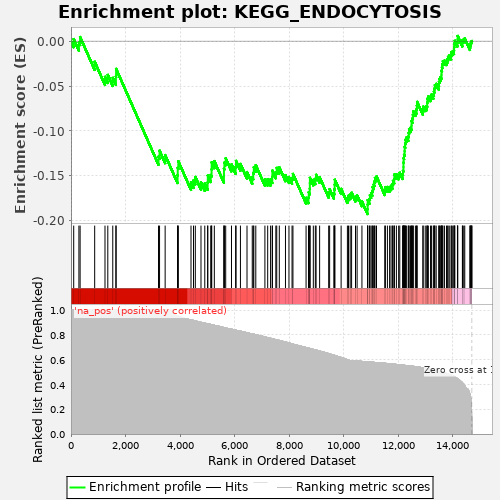
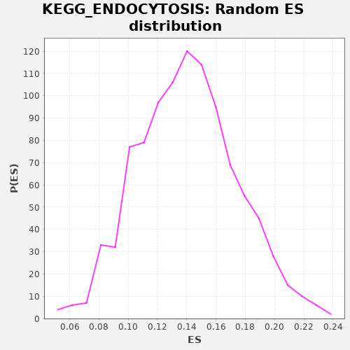

| | | Dataset | drug_embeddings_gsea |
| Phenotype | NoPhenotypeAvailable |
| Upregulated in class | na_neg |
| GeneSet | KEGG_ENDOCYTOSIS |
| Enrichment Score (ES) | -0.19263372 |
| Normalized Enrichment Score (NES) | NaN |
| Nominal p-value | NaN |
| FDR q-value | 1.0 |
| FWER p-Value | 0.0 |
Table: GSEA Results Summary

Fig 1: Enrichment plot: KEGG_ENDOCYTOSIS
Profile of the Running ES Score & Positions of GeneSet Members on the Rank Ordered List
| PROBE | GENE SYMBOL | GENE_TITLE | RANK IN GENE LIST | RANK METRIC SCORE | RUNNING ES | CORE ENRICHMENT | | 1 | ACAP2 | | | 99 | 1.000 | 0.0023 | No |
| 2 | PIP5K1B | | | 290 | 1.000 | -0.0016 | No |
| 3 | RAB22A | | | 334 | 1.000 | 0.0046 | No |
| 4 | RAB11FIP4 | | | 868 | 1.000 | -0.0229 | No |
| 5 | CHMP6 | | | 1246 | 1.000 | -0.0397 | No |
| 6 | ARFGAP3 | | | 1349 | 1.000 | -0.0375 | No |
| 7 | ARFGAP2 | | | 1531 | 1.000 | -0.0408 | No |
| 8 | VPS45 | | | 1645 | 1.000 | -0.0394 | No |
| 9 | ARAP3 | | | 1654 | 1.000 | -0.0308 | No |
| 10 | PIP4K2B | | | 3208 | 1.000 | -0.1286 | No |
| 11 | GRK7 | | | 3246 | 1.000 | -0.1220 | No |
| 12 | RAB11FIP1 | | | 3451 | 1.000 | -0.1268 | No |
| 13 | CHMP2B | | | 3906 | 0.952 | -0.1494 | No |
| 14 | DNAJC6 | | | 3913 | 0.951 | -0.1411 | No |
| 15 | CHMP3 | | | 3934 | 0.950 | -0.1337 | No |
| 16 | PIP5K1A | | | 4399 | 0.921 | -0.1572 | No |
| 17 | GIT2 | | | 4491 | 0.917 | -0.1551 | No |
| 18 | ASAP3 | | | 4557 | 0.913 | -0.1512 | No |
| 19 | CLTCL1 | | | 4765 | 0.902 | -0.1572 | No |
| 20 | PIKFYVE | | | 4904 | 0.895 | -0.1585 | No |
| 21 | CHMP1B | | | 5008 | 0.890 | -0.1574 | No |
| 22 | PSD4 | | | 5015 | 0.889 | -0.1497 | No |
| 23 | VPS37B | | | 5122 | 0.884 | -0.1489 | No |
| 24 | VPS37D | | | 5153 | 0.883 | -0.1429 | No |
| 25 | AGAP1 | | | 5157 | 0.883 | -0.1350 | No |
| 26 | CHMP4C | | | 5254 | 0.877 | -0.1336 | No |
| 27 | ACAP1 | | | 5605 | 0.859 | -0.1498 | No |
| 28 | CHMP2A | | | 5607 | 0.859 | -0.1420 | No |
| 29 | IQSEC1 | | | 5624 | 0.858 | -0.1352 | No |
| 30 | IQSEC2 | | | 5671 | 0.855 | -0.1305 | No |
| 31 | LDLRAP1 | | | 5883 | 0.846 | -0.1373 | No |
| 32 | PSD | | | 6035 | 0.838 | -0.1400 | No |
| 33 | VPS37C | | | 6050 | 0.837 | -0.1333 | No |
| 34 | VTA1 | | | 6211 | 0.830 | -0.1367 | No |
| 35 | PARD6G | | | 6452 | 0.818 | -0.1457 | No |
| 36 | EHD4 | | | 6644 | 0.808 | -0.1515 | No |
| 37 | RAB11FIP2 | | | 6681 | 0.806 | -0.1466 | No |
| 38 | RUFY1 | | | 6702 | 0.806 | -0.1406 | No |
| 39 | GRK1 | | | 6774 | 0.802 | -0.1381 | No |
| 40 | RAB11FIP5 | | | 7108 | 0.784 | -0.1538 | No |
| 41 | EHD3 | | | 7210 | 0.778 | -0.1537 | No |
| 42 | PIP5K1C | | | 7316 | 0.773 | -0.1538 | No |
| 43 | SH3GLB2 | | | 7379 | 0.769 | -0.1510 | No |
| 44 | SMAP1 | | | 7382 | 0.769 | -0.1441 | No |
| 45 | AGAP2 | | | 7509 | 0.762 | -0.1458 | No |
| 46 | ARAP2 | | | 7542 | 0.760 | -0.1411 | No |
| 47 | CHMP4B | | | 7636 | 0.756 | -0.1406 | No |
| 48 | CHMP5 | | | 7862 | 0.743 | -0.1492 | No |
| 49 | STAMBP | | | 7990 | 0.735 | -0.1512 | No |
| 50 | RAB11FIP3 | | | 8103 | 0.728 | -0.1523 | No |
| 51 | RABEP1 | | | 8136 | 0.726 | -0.1478 | No |
| 52 | VPS4A | | | 8617 | 0.699 | -0.1745 | No |
| 53 | SH3GL3 | | | 8706 | 0.694 | -0.1742 | No |
| 54 | VPS36 | | | 8715 | 0.693 | -0.1684 | No |
| 55 | CLTB | | | 8752 | 0.691 | -0.1645 | No |
| 56 | VPS25 | | | 8756 | 0.691 | -0.1584 | No |
| 57 | CLTA | | | 8758 | 0.691 | -0.1521 | No |
| 58 | VPS4B | | | 8883 | 0.683 | -0.1544 | No |
| 59 | GRK4 | | | 8956 | 0.679 | -0.1531 | No |
| 60 | STAM | | | 8984 | 0.678 | -0.1488 | No |
| 61 | CXCR2 | | | 9114 | 0.670 | -0.1515 | No |
| 62 | SNF8 | | | 9446 | 0.649 | -0.1684 | No |
| 63 | GIT1 | | | 9481 | 0.646 | -0.1648 | No |
| 64 | AP2S1 | | | 9636 | 0.637 | -0.1696 | No |
| 65 | FGFR4 | | | 9655 | 0.636 | -0.1650 | No |
| 66 | RAB31 | | | 9666 | 0.635 | -0.1598 | No |
| 67 | ASAP2 | | | 9671 | 0.634 | -0.1543 | No |
| 68 | GRK6 | | | 9902 | 0.618 | -0.1645 | No |
| 69 | RAB11A | | | 10132 | 0.600 | -0.1747 | No |
| 70 | STAM2 | | | 10173 | 0.597 | -0.1720 | No |
| 71 | RAB5C | | | 10234 | 0.593 | -0.1707 | No |
| 72 | CSF1R | | | 10286 | 0.592 | -0.1688 | No |
| 73 | CBLC | | | 10429 | 0.589 | -0.1732 | No |
| 74 | ADRB1 | | | 10488 | 0.589 | -0.1718 | No |
| 75 | CXCR1 | | | 10665 | 0.586 | -0.1785 | No |
| 76 | RET | | | 10871 | 0.582 | -0.1873 | Yes |
| 77 | RAB11B | | | 10874 | 0.582 | -0.1821 | Yes |
| 78 | SMAP2 | | | 10878 | 0.582 | -0.1770 | Yes |
| 79 | CHMP4A | | | 10941 | 0.581 | -0.1759 | Yes |
| 80 | HLA-G | | | 10958 | 0.581 | -0.1717 | Yes |
| 81 | PLD1 | | | 11002 | 0.580 | -0.1693 | Yes |
| 82 | RAB4A | | | 11045 | 0.579 | -0.1669 | Yes |
| 83 | VPS28 | | | 11059 | 0.579 | -0.1625 | Yes |
| 84 | SH3GLB1 | | | 11096 | 0.578 | -0.1597 | Yes |
| 85 | DNM3 | | | 11123 | 0.578 | -0.1562 | Yes |
| 86 | ARF6 | | | 11144 | 0.577 | -0.1523 | Yes |
| 87 | ARFGAP1 | | | 11199 | 0.576 | -0.1507 | Yes |
| 88 | HLA-E | | | 11502 | 0.571 | -0.1663 | Yes |
| 89 | SH3GL1 | | | 11525 | 0.571 | -0.1625 | Yes |
| 90 | NEDD4L | | | 11599 | 0.569 | -0.1624 | Yes |
| 91 | EHD2 | | | 11679 | 0.567 | -0.1626 | Yes |
| 92 | SH3GL2 | | | 11731 | 0.566 | -0.1609 | Yes |
| 93 | DNM1L | | | 11783 | 0.565 | -0.1593 | Yes |
| 94 | ADRB3 | | | 11804 | 0.564 | -0.1555 | Yes |
| 95 | AP2A2 | | | 11849 | 0.563 | -0.1533 | Yes |
| 96 | AP2A1 | | | 11854 | 0.563 | -0.1484 | Yes |
| 97 | EPN2 | | | 11928 | 0.562 | -0.1483 | Yes |
| 98 | USP8 | | | 12011 | 0.559 | -0.1488 | Yes |
| 99 | NTRK1 | | | 12052 | 0.558 | -0.1465 | Yes |
| 100 | DAB2 | | | 12156 | 0.556 | -0.1485 | Yes |
| 101 | PARD6A | | | 12170 | 0.556 | -0.1443 | Yes |
| 102 | HLA-F | | | 12187 | 0.555 | -0.1403 | Yes |
| 103 | WWP1 | | | 12188 | 0.555 | -0.1352 | Yes |
| 104 | VPS37A | | | 12193 | 0.555 | -0.1304 | Yes |
| 105 | PLD2 | | | 12210 | 0.555 | -0.1264 | Yes |
| 106 | EEA1 | | | 12230 | 0.554 | -0.1226 | Yes |
| 107 | IL2RA | | | 12232 | 0.554 | -0.1176 | Yes |
| 108 | EHD1 | | | 12251 | 0.554 | -0.1138 | Yes |
| 109 | LDLR | | | 12265 | 0.553 | -0.1096 | Yes |
| 110 | PARD3 | | | 12303 | 0.552 | -0.1071 | Yes |
| 111 | ASAP1 | | | 12364 | 0.551 | -0.1062 | Yes |
| 112 | TSG101 | | | 12380 | 0.550 | -0.1022 | Yes |
| 113 | ARAP1 | | | 12395 | 0.550 | -0.0981 | Yes |
| 114 | SMURF1 | | | 12444 | 0.549 | -0.0964 | Yes |
| 115 | F2R | | | 12484 | 0.548 | -0.0940 | Yes |
| 116 | EPN1 | | | 12485 | 0.548 | -0.0890 | Yes |
| 117 | RAB5A | | | 12516 | 0.547 | -0.0861 | Yes |
| 118 | AP2B1 | | | 12533 | 0.547 | -0.0822 | Yes |
| 119 | GRK5 | | | 12548 | 0.546 | -0.0781 | Yes |
| 120 | CLTC | | | 12625 | 0.544 | -0.0784 | Yes |
| 121 | EGF | | | 12663 | 0.543 | -0.0759 | Yes |
| 122 | PDGFRA | | | 12679 | 0.542 | -0.0720 | Yes |
| 123 | EPN3 | | | 12688 | 0.542 | -0.0676 | Yes |
| 124 | PSD3 | | | 12899 | 0.535 | -0.0771 | Yes |
| 125 | FGFR2 | | | 12909 | 0.534 | -0.0729 | Yes |
| 126 | TFRC | | | 12985 | 0.531 | -0.0732 | Yes |
| 127 | FGFR3 | | | 13043 | 0.528 | -0.0722 | Yes |
| 128 | EPS15 | | | 13058 | 0.528 | -0.0684 | Yes |
| 129 | HGS | | | 13065 | 0.528 | -0.0640 | Yes |
| 130 | SMURF2 | | | 13100 | 0.526 | -0.0615 | Yes |
| 131 | AP2M1 | | | 13180 | 0.523 | -0.0621 | Yes |
| 132 | DNM1 | | | 13212 | 0.521 | -0.0595 | Yes |
| 133 | CXCR4 | | | 13281 | 0.519 | -0.0594 | Yes |
| 134 | CCR5 | | | 13304 | 0.518 | -0.0562 | Yes |
| 135 | ARRB1 | | | 13323 | 0.517 | -0.0527 | Yes |
| 136 | SH3KBP1 | | | 13340 | 0.516 | -0.0490 | Yes |
| 137 | NEDD4 | | | 13387 | 0.514 | -0.0475 | Yes |
| 138 | HLA-C | | | 13483 | 0.508 | -0.0494 | Yes |
| 139 | PRKCI | | | 13490 | 0.507 | -0.0452 | Yes |
| 140 | HSPA2 | | | 13512 | 0.506 | -0.0420 | Yes |
| 141 | HLA-A | | | 13550 | 0.503 | -0.0399 | Yes |
| 142 | ARRB2 | | | 13581 | 0.501 | -0.0374 | Yes |
| 143 | KIT | | | 13582 | 0.501 | -0.0328 | Yes |
| 144 | IL2RB | | | 13599 | 0.500 | -0.0293 | Yes |
| 145 | FLT1 | | | 13613 | 0.499 | -0.0256 | Yes |
| 146 | CBLB | | | 13633 | 0.498 | -0.0224 | Yes |
| 147 | HLA-B | | | 13689 | 0.494 | -0.0216 | Yes |
| 148 | PDCD6IP | | | 13764 | 0.488 | -0.0223 | Yes |
| 149 | ADRB2 | | | 13795 | 0.486 | -0.0199 | Yes |
| 150 | RNF41 | | | 13823 | 0.484 | -0.0173 | Yes |
| 151 | ITCH | | | 13866 | 0.480 | -0.0158 | Yes |
| 152 | HSPA1L | | | 13935 | 0.474 | -0.0161 | Yes |
| 153 | KDR | | | 13942 | 0.473 | -0.0122 | Yes |
| 154 | ACAP3 | | | 13993 | 0.468 | -0.0113 | Yes |
| 155 | DNM2 | | | 14040 | 0.464 | -0.0103 | Yes |
| 156 | IL2RG | | | 14044 | 0.464 | -0.0062 | Yes |
| 157 | PARD6B | | | 14052 | 0.463 | -0.0025 | Yes |
| 158 | HSPA6 | | | 14071 | 0.460 | 0.0005 | Yes |
| 159 | CDC42 | | | 14167 | 0.446 | -0.0019 | Yes |
| 160 | IGF1R | | | 14173 | 0.445 | 0.0018 | Yes |
| 161 | HRAS | | | 14175 | 0.445 | 0.0058 | Yes |
| 162 | ERBB4 | | | 14347 | 0.414 | -0.0022 | Yes |
| 163 | MET | | | 14353 | 0.412 | 0.0013 | Yes |
| 164 | TRAF6 | | | 14397 | 0.402 | 0.0020 | Yes |
| 165 | PRKCZ | | | 14434 | 0.390 | 0.0031 | Yes |
| 166 | HSPA1B | | | 14623 | 0.320 | -0.0069 | Yes |
| 167 | CBL | | | 14633 | 0.306 | -0.0047 | Yes |
| 168 | ERBB3 | | | 14650 | 0.292 | -0.0032 | Yes |
| 169 | SRC | | | 14660 | 0.271 | -0.0013 | Yes |
| 170 | HSPA8 | | | 14679 | 0.215 | -0.0006 | Yes |
| 171 | MDM2 | | | 14691 | 0.136 | -0.0001 | Yes |
| 172 | EGFR | | | 14695 | 0.054 | 0.0002 | Yes |
Table: GSEA details [plain text format]

Fig 2: KEGG_ENDOCYTOSIS: Random ES distribution
Gene set null distribution of ES for KEGG_ENDOCYTOSIS